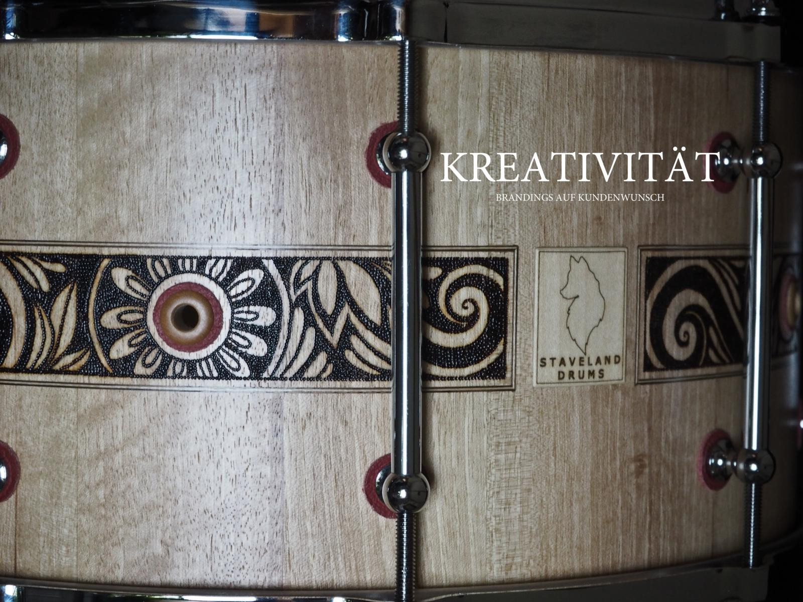
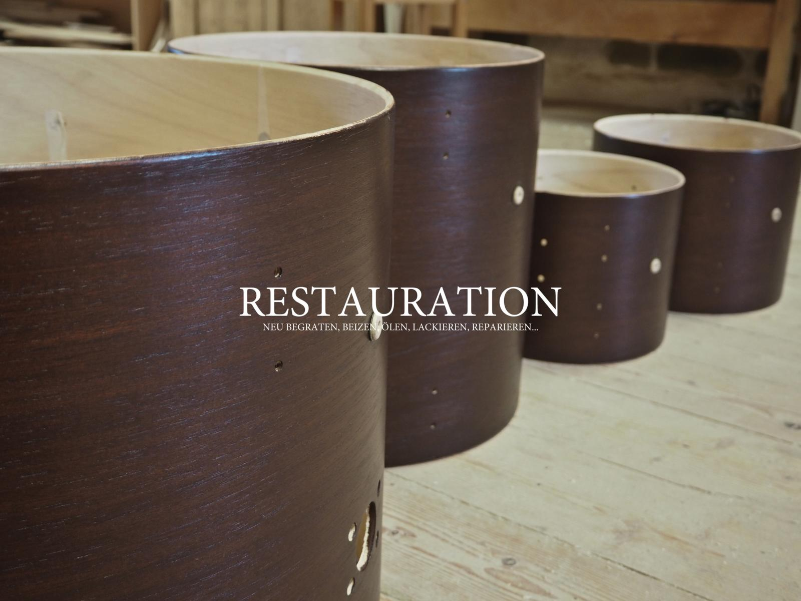

Stavelanddrums wurde im Jahr 2015 gegründet. Eine große Leidenschaft und Hingabe für Musik bilden dafür den Grundstock. Unser Team besteht aus zwei hochmotivierten Schlagzeugfreaks, deren Kompetenzen sich bestens vereinen und so zu einer fähigen Einheit verschmelzen.
Wir sehen unsere Aufgabe im Schlagzeugbau darin, den ästhetischen als auch den klanglichen Ansprüchen unserer Kunden gerecht zu werden.
Wir spielen selbst seit vielen Jahren Schlagzeug. Von daher kommt auch die große Leidenschaft unsere Instrumente selbst herzustellen und sie an Kunden weiterzuverkaufen, die den Wert an Handarbeit genauso zu schätzen wissen, wie wir selbst.


Stavelanddrums
Oberaich 34
4232 Hagenberg